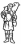
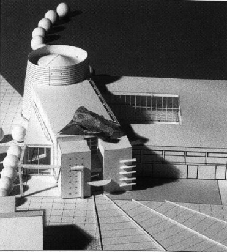

Cei Conferenza episcopale italiana
da pubblicazione allegata al n.671
di "Casabella" settembre 1999
|
 | Cei Conferenza episcopale italiana |
Progetti per la Chiesa di Santa Maria in Zivido di San Giuliano Milanese |
Favole Paolo |
 |
indice progetti

sito di propriet� della Associazione
Culturale Zivido
webmaster@aczivido.net